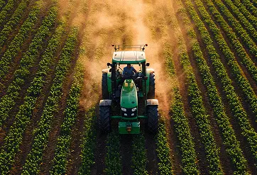

INTELIGÊNCIA EXECUTIVA PARA O AGRONEGÓCIO
O AGRO NÃO PARA.
VOCÊ PRECISA ENTENDER O QUE IMPORTA.
Clima, safra, estoques, câmbio, exportações, demanda global, geopolítica, preços e resultados das grandes empresas. O AG Outlook transforma tudo isso em análises objetivas para você tomar decisões melhores.
QUERO TER ACESSO AO AG OUTLOOK ❯O MERCADO NÃO PARA
ENQUANTO VOCÊ ESTÁ NO CAMPO, O MERCADO ESTÁ SE MOVENDO.
Uma mudança no clima, um nome dado de estoques, uma decisão política ou o resultado trimestral de uma grande empresa pode alterar o cenário inteiro.
O problema não é a falta de informação, é ter tempo para acompanhar tudo, separar ruido de sinal e transformar dezenas de acontecimentos em uma visão clara.
É exatamente isso que o Ag Outlook faz.
O QUE ESTÁ MOVENDO O AGRO?
UMA VISÃO COMPLETA DE TUDO O QUE REALMENTE IMPORTA.
SAFRA
Produção, produtividade, área plantada, estoques e perspectivas das principais culturas.
CLIMA
Os eventos climáticos que podem alterar oferta, produtividade e preços.
COMMODITIES
Soja, milho, algodão, arroz, café e trigo, acompanhados pelos principais indicadores do mercado.
EXPORTAÇÕES
Fluxo de comércio, participação brasileira e os movimentos que podem mudar o cenário para quem produz e para quem atua na cadeia.
EMPRESAS
Resultados, investimentos, estratégia e movimentos das grandes companhias que ajudam a definir os rumos do agro.
TUDO ISSO E MUITO MAIS ➜
TRÊS FORMATOS. UMA LEITURA SÓ.
O QUE REALMENTE IMPORTA NO MOMENTO CERTO.
SEMANAL
Clipping de Commodities
As principais movimentações do mercado agrícola global, com clima, geopolítica, estoques, produção, comércio e preços.

MENSAL
Relatório do Agronegócio
Um raio-x das principais culturas: soja, milho algodão, arroz, café e trigo. Consumo, estoques, oferta e demanda, principais produtores e mercado brasileiro com dados USDA/WASDE e Comex Stat.
TRIMESTRAL
Relatório de Resultados
Leitura executiva dos resultados das grandes companhias do agro, com desempenho por segmento, destaques financeiros e as perspectivas que afetam o produto.
MENOS
GARIMPO,
MAIS
DECISÃO.
Economize tempo
A gente garimpa dezenas de fontes todas as semanas. Você recebe o essencial.
Fontes verificáveis
Dados oficiais - USDA/WASDE - e resultados divulgados pelas próprias companhias.
Visão completa do setor
Do preço da commodity ao resultado trimestral de quem fabrica até a colheita. O cenário inteiro, não só um pedaço dele.
Formato executivo
Sem jargão desnecessário. Resumo, gráfico, decisão - feito para quem lê entre uma reunião e outra.
EXEMPLO DO QUE VOCÊ ENCONTRA
RELATÓRIO MENSAL - SOJA
Exportações Brasileiras 2026/27
118,0 Mt
Exportação Brasil Safra 26/27
62%
Participação nas exportações mundiais
Mas o número sozinho não conta a história
Oferta global. Demanda internacional. Produção dos principais concorrentes. Estoques. Fluxo de exportação.
É essa leitura que transforma dado em inteligência.
PARA QUEM É O AG OUTLOOK?
PRODUTORES
Para quem precisa entender o mercado além da própria propriedade.
PROFISSIONAIS DO AGRO
Para quem precisa entender várias áreas do mercado, sem precisar pesquisar por horas.
EXECUTIVOS E GESTORES
Para quem precisa chegar às reuniões entendendo o cenário.
EMPRESAS DO AGRO
Para quem precisa acompanhar concorrentes.
PLANOS
ESCOLHA O NÍVEL DE PROFUNDIDADE QUE VOCÊ PRECISA
VALORES A DEFINIR - ESTRUTURA DOS PLANOS SUJEITA A AJUSTES
Diamante
Tudo do Ouro
Arquivo completo de relatórios anteriores
Prioridade no suporte
R$399,00/ mês
Assinar Diamante